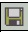
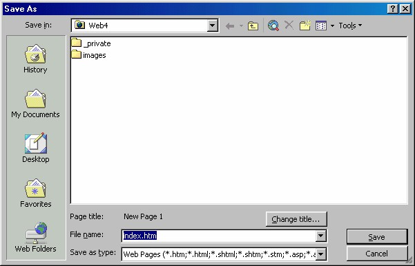
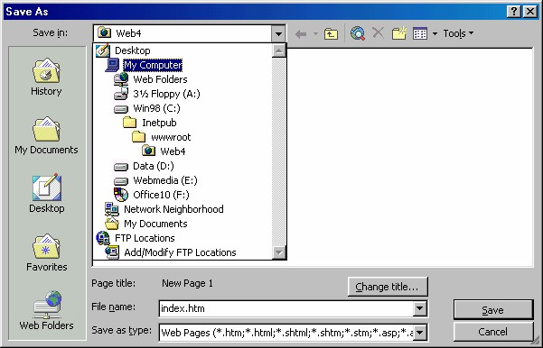
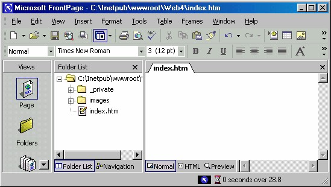
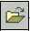
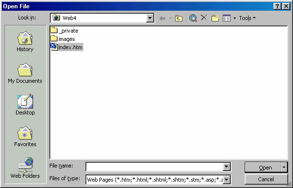

3 Menyimpan dan membuka halaman
Setelah membuat halaman baru dan membuat teks pengisinya, proses selanjutnya
yang tidak boleh dilupakan adalah menyimpan halaman tersebut.
Jika Anda membuat halaman baru pada FrontPage Editor, halaman tersebut
sebenarnya sudah disimpan, namun penyimpanan ini hanya bersifat sementara, yaitu
pada memori komputer.
yang berawal dari 1 lalu 2, 3, 4 dan seterusnya.
Halaman tersebut hanya ada sampai Anda keluar dari FrontPage XP atau mematikan
komputer.
Untuk menyimpan sebuah halaman secara permanen sehingga bisa dibuka kembali,
Anda harus memberinya nama dan menyimpannya di dalam disk, baik disket
maupun hard disk.
Ada beberapa jenis proses penyimpanan, yaitu penyimpanan halaman baru,
penyimpanan tanpa menutup halaman dan penyimpanan dengan nama lain.
3.1 Menyimpan halaman baru
Kalau Anda melakukan penyimpanan halaman baru, hal ini berarti proses
penyimpanan halaman yang pertama kali.
Pada proses penyimpanan yang pertama kali, FrontPage XPakan menampilkan kotak
dialog Save As guna menentukan aturan-aturan penyimpanan.
Cara lengkap menyimpan dokumen adalah:
1. Aktifkan perintah File _ Save atau klik tombol Save ( ) pada toolbar atau
tekan Ctrl+S keyboard. Kotak dialog Save As tampil. (Gambar 4.4).

Gambar 4.4 Kotak dialog Save As
2. Pada kotak teks File Name tuliskan nama yang Anda inginkan untuk halaman.
Nama tersebut panjangnya bisa sampai 256 karakter. Usahakan memberi nama
yang mewakii isi halaman, atau nama yang sesuai aturan. Misalnya default.htm.
Perhatikan bahwa untuk halaman pertama web site kosong ini, FrontPage XP
telah menyediakan nama yang sesuai, yaitu index.htm. Jadi untuk kali ini Anda
tidak perlu menulis kata apapun.
3. Jika Anda ingin menyimpan halaman pada drive atau folder yang berbeda,
gunakan pilihan Save in. Lihat Gambar 4.5.

Gambar 4.5 Pilihan Save in
4. Namun untuk membuat halaman web site baru ini, jaganlah mengubah folder
tujuan, jadi urungkan untuk mengubah folder, yang penting Anda mengerti cara
mengubah folder tujuan.
5. Kemudian klik Save. Hasilnya seperti berikut ini:

Gambar 4.6 Halaman index.htm
3.2 Menyimpan tanpa menutup halaman
Setelah memberi nama dan menyimpan halaman (proses penyimpanan yang
pertama), selanjutnya Anda harus melakukan penyimpanan berikutnya secara
periodik. Tujuannya untuk menyimpan file sesuai perkembangan informasi yang ada
pada halaman. Tujuan lainnya adalah untuk menghindari kemungkinan kehilangan
data apabila sewaktu-waktu hal yang tidak kita inginkan terjadi, misalnya listrik mati
atau terjadi masalah pada sistem komputer Anda dan data yang Anda hasilkan belum
sempat disimpan.
Setelah Anda memberi nama halaman, lalu Anda dapat dengan mudah menyimpan
versi terbaru halaman sekaligus mengganti versi lama halaman. Cara mudah ini
adalah penyimpanan langsung.
Proses penyimpanan langsung tidak akan membuka kotak dialog Save As, sebab
tidak perlu pengaturan baru.
Ada beberapa cara yang bisa Anda tempuh untuk melaksanakan penyimpanan
langsung, yaitu:
• Aktifkan perintah File _ Save.
• Klik tombol Save pada toolbar Standar.
• Tekan Ctrl+S pada keyboard.
Sekali lagi, simpanlah halaman Anda secara teratur selama Anda bekerja dengan
halaman tersebut. Jika tidak, Anda akan mendapat resiko kehilangan kemajuan
pengerjaan halaman, yang susah-susah Anda lakukan.
Memang bisa saja membuat ulang pekerjaan Anda, namun hal itu sebaiknya
dihindari sebisa mungkin, sebab hanya membuang waktu dan bisa membuat frustasi.
3.3 Menyimpan dengan nama lain
Setelah Anda menyimpan halaman dengan suatu nama, Anda mungkin perlu
menggantinya dengan nama lain. Sebagai contoh, Anda dapat menyimpan versi lama
halaman dengan nama aslinya lalu menyimpan versi barunya (revisi) dengan nama
baru.
Hal seperti ini amat diperlukan apabila Anda harus setiap kali mengukur kemajuan
atau harus menyimpan masing-masing versi.
Untuk mengubah nama halaman, ikuti langkah-langkah berikut ini:
1. Dengan halaman masih terbuka, aktifkan perintah File _ Save As . Kotak dialog
Save As tampil dan nama halaman ditampilkan pada kotak File Name .
2. Kalau Anda ingin menyimpannnya ke folder lain, gunakan kotak daftar Save In.
3. Kemudian klik Save. FrontPage XP akan menyimpan halaman terbuka tersebut
dengan nama baru.
3.4 Membuka sebuah halaman
Setelah suatu halaman disimpan, tentunya telah memiliki nama tertentu. Selanjutnya,
setiap saat kita bisa membuka kembali halaman tersebut. Caranya, cukup dengan
klik ganda nama halaman pada Windows Explorer atau pada My Computer.
Sedangkan untuk membuka halaman FrontPage XP, caranya adalah:
1. Aktifkan perintah File _ Open atau klik tombol Open ( ) pada toolbar
Standar. Kotak dialog Open File tampil, seperti Gambar 4.7.

Gambar 4.7 Kotak dialog Open
2. Daftar file menampilkan semua halaman dan folder yang ada di folder site yang
sedang terbuka. Halaman diwujudkan dengan icon kecil di sebelah nama
halaman, sedangkan folder ditampilkan sebagai icon folder. Kotak daftar Look
In bisa kita manfaatkan untuk mencari nama drive atau folder yang ingin kita
buka.
3. Pada kotak dialog Open file ini Anda dapat melakukan beberapa hal seperti
berikut:
• Untuk membuka sebuah file, pada daftar file klik nama file tersebut atau
ketikkan namanya pada kotak isian File Name . Lalu tekan Enter atau
klik tombol Open. Atau cara yang lebih mudah adalah klik ganda nama
file tersebut.
• Untuk membuka folder, klik ganda icon folder yang pada daftar.
Untuk membuka sebuah halaman dengan cepat, aktifkan File _ Recent Files, lalu
klik nama halaman yang ada pada daftar file yang pernah dibuka. Jika nama halaman
tersebut tidak ada pada daftar, berarti halaman tersebut belum pernah dibuka.
Daftar Recent Files ini menampilkan file -file halaman yang pernah Anda simpan,
terurut berdasarkan waktu penyim-panannya. Jadi halaman terakhir akan mendapat
nomor 1, lalu jika Anda melakukan penyimpanan lagi, halaman baru ini akan
mendapat nomor 1 dan halaman sebelumnya akan menjadi nomor 2. Demikian
seterusnya.
Pada waktu daftar tampil, jika Anda menekan nomor halaman di keyboard, maka
halaman tersebut akan dibuka.
Jika FrontPage XP yang Anda pakai adal software yang baru saja diinstal, tentu saja
tidak ada file yang akan ditampilkan pada daftar Recent Files. Sebab FrontPage XP
memang belum pernah membuka file apapun.
Copyright © Herlan Lesmana
Created with the Freeware Edition of HelpNDoc: Easily create CHM Help documents